Antes de empezar
Solo necesitas tres cosas:
- Una cuenta de Google (la misma de Gmail). EcoGestión no usa contraseñas propias.
- Un navegador actualizado: Chrome, Edge, Firefox o Safari, en computador o celular.
- Conexión a Internet. Todo se guarda en línea y lo ven, al instante, las personas de tu municipio que deben verlo.
No hay que instalar nada. La dirección es ryuuga-code.github.io/EcoGestion.

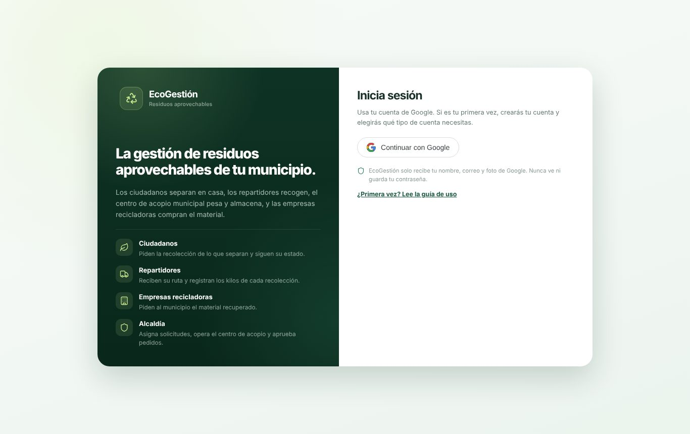
Entrar por primera vez
- Abre EcoGestión y pulsa Continuar con Google.
- Elige tu cuenta de Google y acepta compartir tu nombre, correo y foto.
- Elige tu tipo de cuenta: ciudadano, repartidor o empresa recicladora.
- Elige tu departamento y luego tu municipio en las listas. Están todos los municipios de Colombia según el DANE.
- Escribe tu dirección y barrio (obligatoria para ciudadanos) y un teléfono (obligatorio para repartidores). Pulsa Crear cuenta.

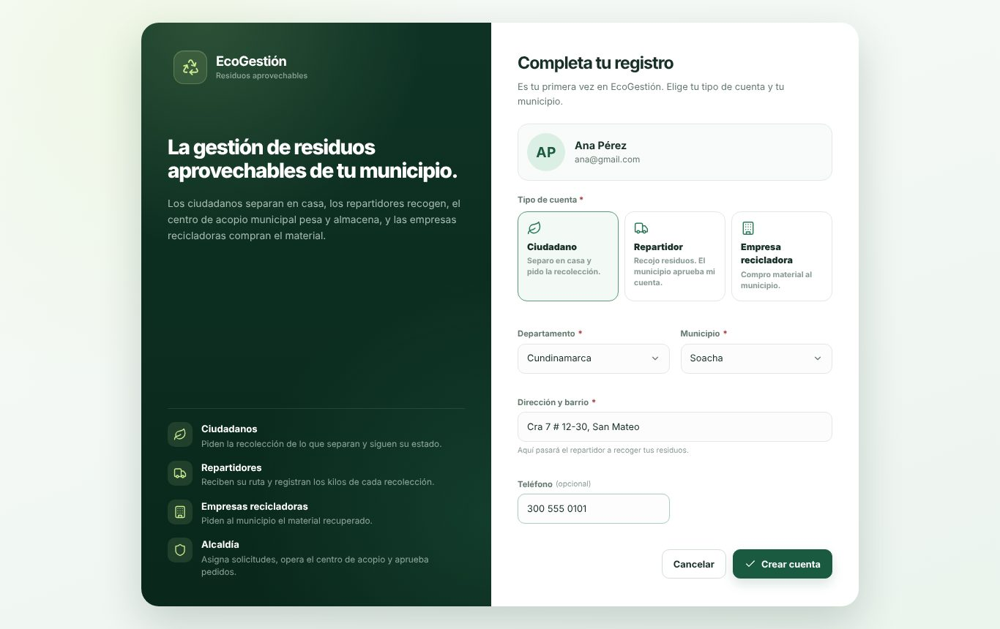
¿Qué tipo de cuenta elijo?
Separas en casa plástico, papel y cartón, vidrio y metal, y quieres que pasen a recogerlos.
Trabajas recogiendo los residuos en el municipio. El administrador debe aprobar tu cuenta.
Representas una empresa que compra material recuperado para transformarlo.
Tu cuenta queda en el municipio que elegiste y solo ves lo de ese municipio. Si te equivocaste de municipio o de tipo de cuenta, pídeselo al administrador.
Cómo funciona
- El ciudadano separa sus residuos y solicita la recolección, con fecha y franja horaria.
- El administrador del municipio asigna la solicitud a un repartidor.
- El repartidor la recoge, pesa cada material y registra los kilos.
- Esos kilos entran solos al inventario del centro de acopio municipal.
- Las empresas recicladoras ven el material disponible y hacen pedidos; el administrador los aprueba y registra la entrega.
Si eres ciudadano
Al entrar llegas a Mis solicitudes. Arriba ves cuántas están en espera, con repartidor y recolectadas, y cuántos kilos has aprovechado.
Pedir una recolección
- Pulsa Solicitar recolección.
- Marca qué separaste: plástico, papel y cartón, vidrio, metal u otros.
- Revisa la dirección (viene de tu perfil) y elige la fecha y la franja: mañana, tarde o cualquier hora.
- Si quieres, indica cuántos kilos calculas y alguna indicación (“bolsas en la portería”). Pulsa Enviar solicitud.

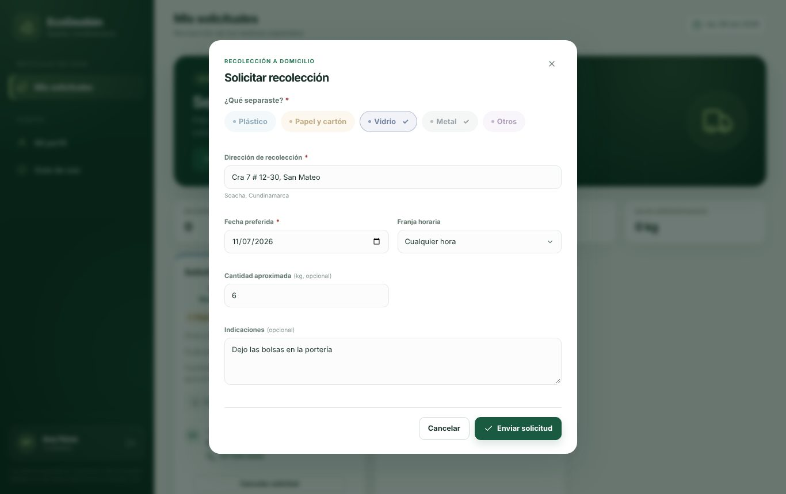
Seguir tus solicitudes
Cada solicitud muestra su avance: Recibida → Con repartidor → Recolectada. Cuando tiene repartidor, ves su nombre y su teléfono. Cuando se recoge, ves los kilos que se registraron.

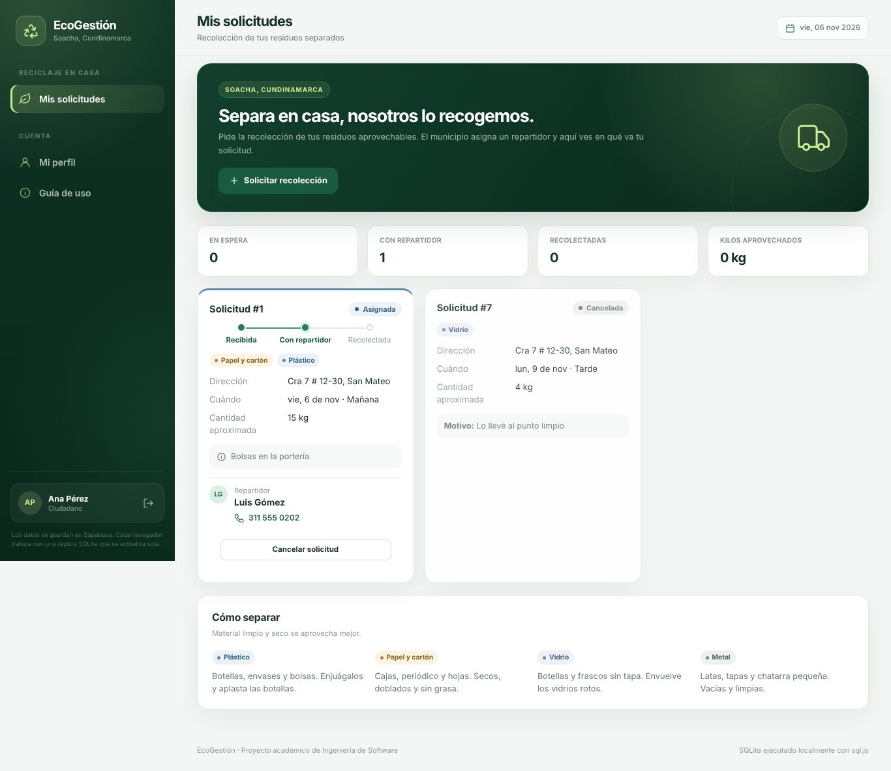
Puedes tener hasta 3 solicitudes abiertas. Si ya no la necesitas, usa Cancelar solicitud mientras no se haya recogido.
Si eres repartidor
Después de registrarte, tu cuenta queda esperando aprobación. Cuando el administrador de tu municipio la apruebe, vuelve a pulsar Continuar con Google.
Tu ruta
En Mis rutas están las solicitudes que te asignaron, ordenadas por la fecha que pidió el ciudadano. Cada tarjeta trae la dirección, los residuos, las indicaciones y el teléfono del ciudadano. Ver mapa abre la dirección en Google Maps.

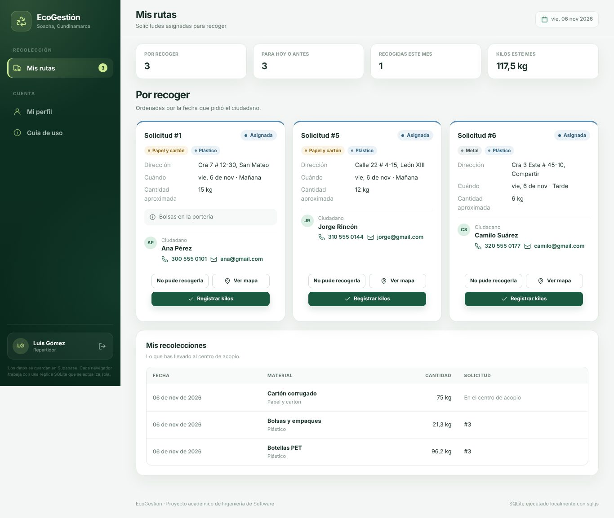
Registrar los kilos
- En la solicitud recogida, pulsa Registrar kilos.
- Aparece una línea por cada tipo que marcó el ciudadano. Elige el material exacto y escribe lo que pesó.
- Con Agregar otro material sumas más líneas. Abajo ves el total en kilos.
- Pulsa Registrar recolección. El material entra al inventario del centro de acopio.

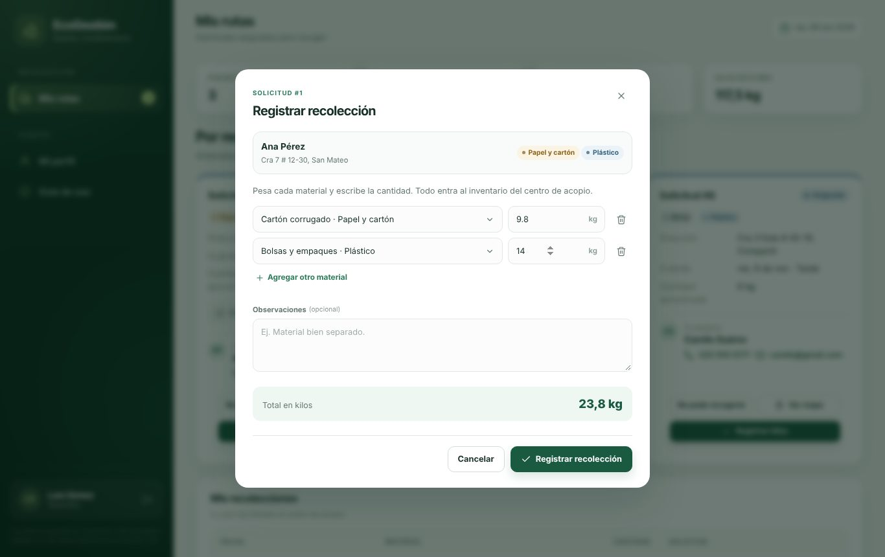
Si no pudiste recogerla (nadie atendió, dirección equivocada…), usa No pude recogerla y cuenta qué pasó. La solicitud vuelve al administrador para asignarla otra vez.
Si eres una empresa recicladora
El Panel empresarial muestra el material disponible en el centro de acopio de tu municipio, sin lo que ya está reservado para otras empresas.
- Revisa que tu perfil empresarial (abajo) tenga tus datos de contacto.
- Pulsa Pedir en el material que necesitas.
- Escribe la cantidad y el precio que ofreces por kilo. Verás el valor total. Pulsa Enviar pedido.
- En Mis pedidos sigues su estado y lees la respuesta del municipio (por ejemplo, cuándo recogerlo).

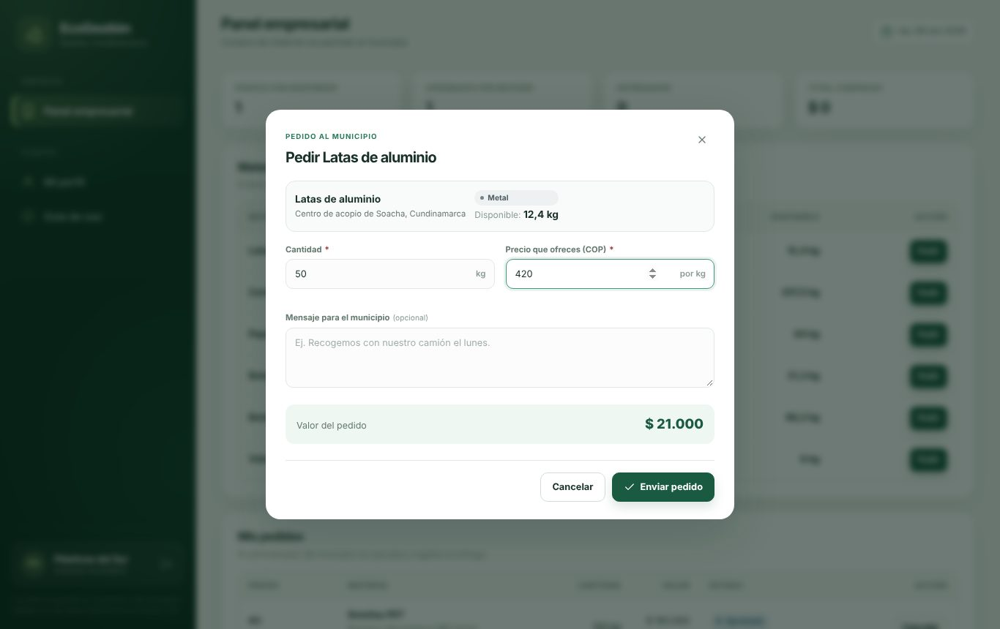

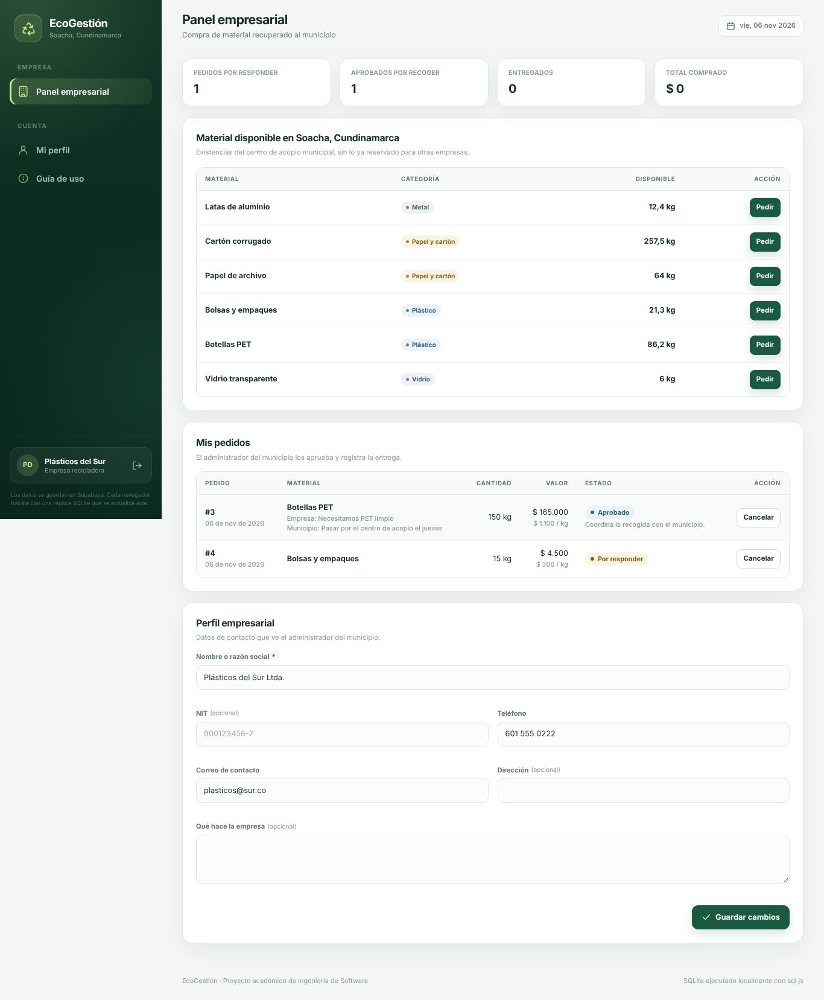
Mientras el pedido esté pendiente o aprobado puedes cancelarlo. EcoGestión registra el acuerdo; el pago y la recogida se coordinan con el municipio.
Para administradores
El administrador representa a la alcaldía de un municipio. Solo ve y gestiona las cuentas, solicitudes, inventario y pedidos de ese municipio. Los correos de administrador los autoriza el responsable del sistema; al registrarse, cada uno elige su municipio.
El día a día
El Panel principal muestra lo que espera atención: solicitudes sin asignar, repartidores por aprobar y pedidos abiertos. El menú también muestra esos números.

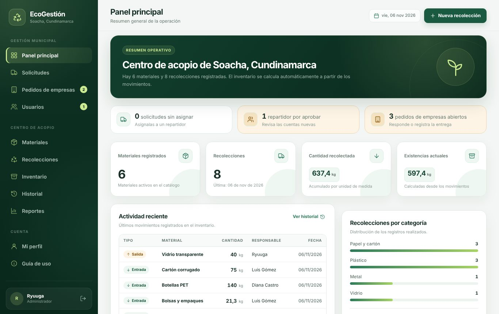
Solicitudes
En Solicitudes filtras por estado y buscas por ciudadano, dirección o repartidor. Para cada solicitud abierta puedes:
- Asignar o Reasignar: eliges el repartidor. Entre paréntesis ves cuántas tiene ya.
- Registrar kilos: si el repartidor te reporta por teléfono, lo registras tú.
- Rechazar: con un motivo que el ciudadano verá.

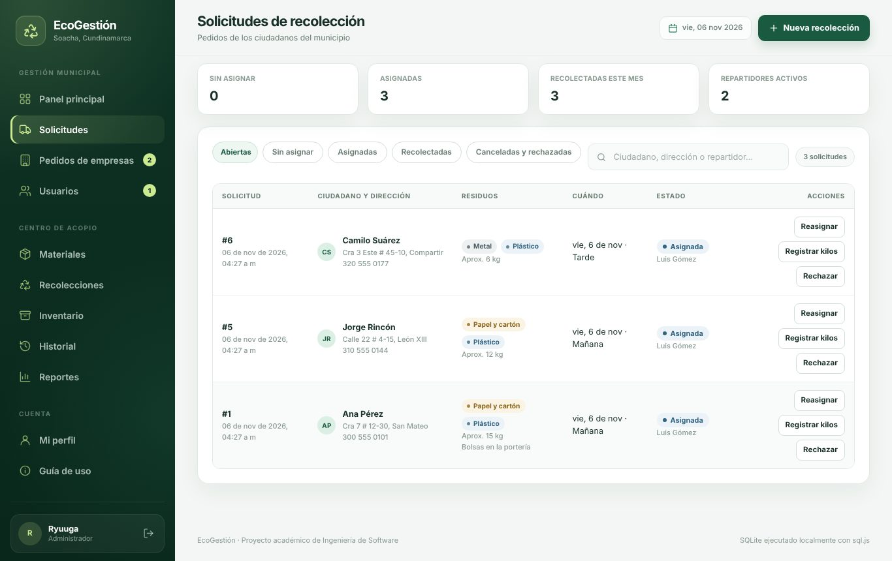

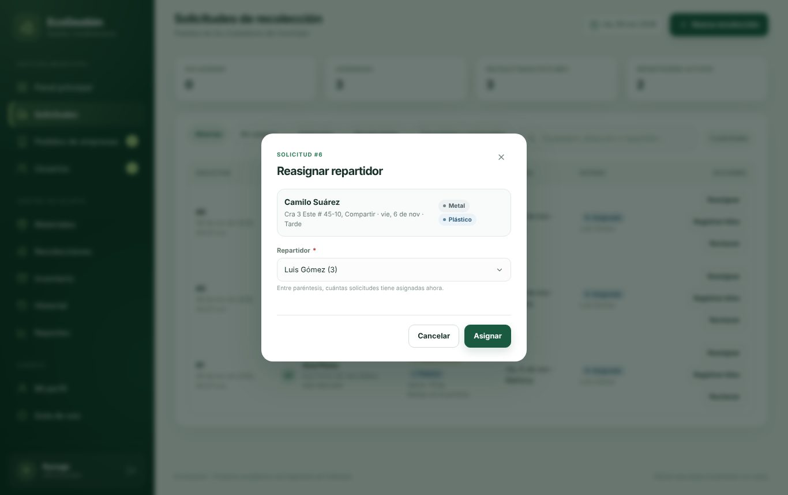
Pedidos de empresas
Aprobar reserva el material para esa empresa (ya no se puede sacar por otra vía). Cuando la empresa lo recoge, Registrar entrega crea la salida del inventario. También puedes rechazar o anular con un motivo, y exportar los pedidos a CSV.

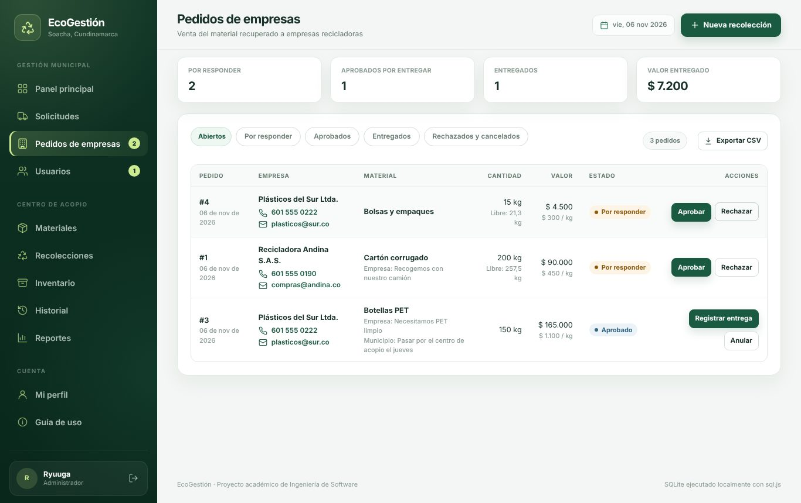
Usuarios
En Usuarios apruebas a los repartidores nuevos, activas o desactivas cuentas y cambias el tipo de cuenta (ciudadano, repartidor o administrador). Abajo hay estadísticas de solicitudes, kilos por repartidor y entregas a empresas.

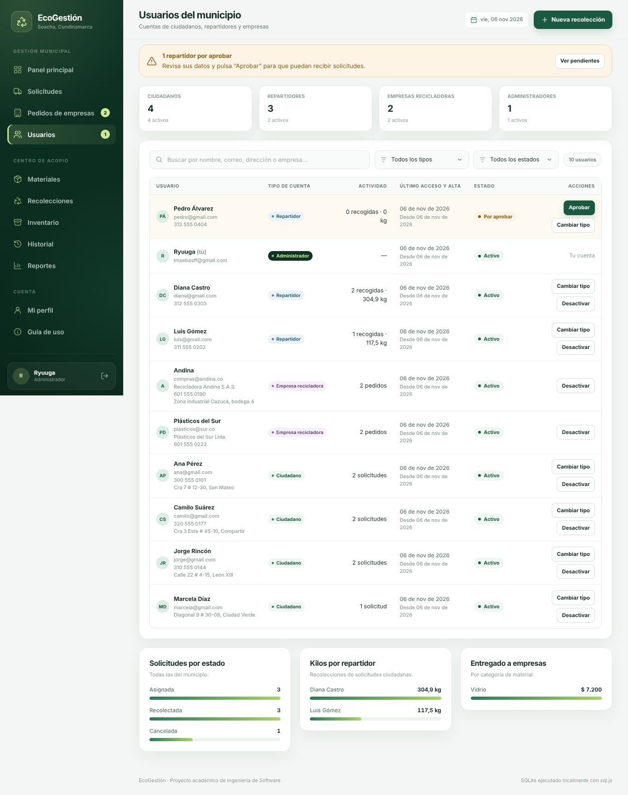
Centro de acopio
Materiales, Recolecciones, Inventario, Historial y Reportes registran lo que entra y sale del centro de acopio. Crea primero los materiales (por ejemplo “Botellas PET” en Plástico): son los que los repartidores eligen al registrar los kilos. También puedes registrar material que llega directo al centro de acopio con Nueva recolección.
Una cuenta desactivada no puede entrar, pero su historial se conserva. Si desactivas a un repartidor, sus solicitudes asignadas vuelven a quedar sin asignar. Siempre debe quedar al menos un administrador activo en el municipio.
Estados de solicitudes y pedidos
Solicitud de recolección
| Estado | Qué significa | Quién lo cambia |
|---|---|---|
| Sin asignar | El municipio recibió la solicitud. | El administrador la asigna o la rechaza; el ciudadano puede cancelarla. |
| Asignada | Un repartidor la tiene en su ruta. | El repartidor registra los kilos o la devuelve; el administrador puede reasignarla. |
| Recolectada | Se recogió y el material entró al centro de acopio. | Estado final. |
| Cancelada / Rechazada | El ciudadano desistió o el municipio no puede atenderla (con motivo). | Estado final. |
Pedido de una empresa
Tu perfil y cerrar sesión
Pulsa tu nombre en la parte de abajo del menú o entra a Mi perfil. Ahí ves tu tipo de cuenta, tu municipio y lo que puedes hacer, y puedes cambiar tu teléfono y tu dirección. El nombre, el correo y la foto vienen de Google.

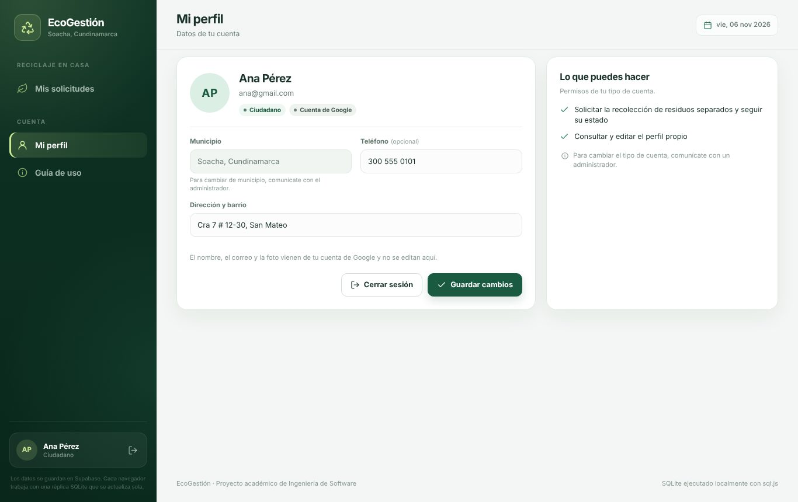
Para cerrar sesión, pulsa el botón de salida junto a tu nombre o Cerrar sesión en tu perfil. Hazlo siempre que uses un computador compartido.
Desde el celular

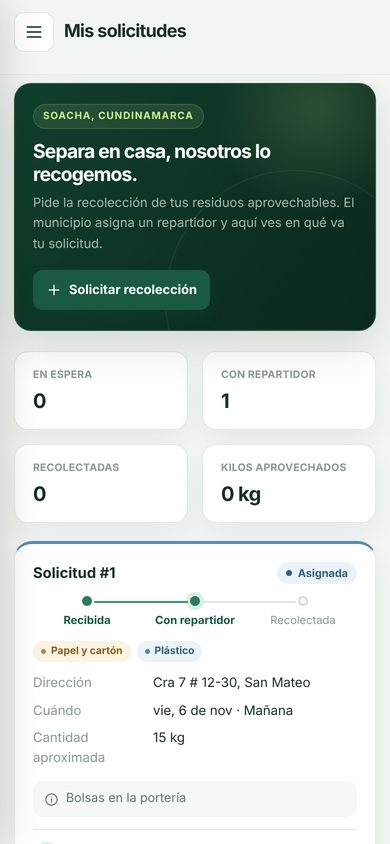
EcoGestión se adapta a la pantalla del celular, ideal para los repartidores en la calle. El menú se abre con el botón de tres líneas, arriba a la izquierda.
Para tenerlo a mano como una aplicación, en Chrome abre el menú (⋮) y elige Agregar a la pantalla principal.
Preguntas frecuentes
Mi municipio no tiene administrador. ¿Qué pasa con mi solicitud?
Queda guardada como Sin asignar hasta que la alcaldía de tu municipio tenga un administrador en EcoGestión.
No veo los cambios que hizo otra persona
La información se actualiza sola cada 30 segundos y cada vez que haces algo. Si tienes prisa, recarga la página.
Me registré como repartidor y no puedo entrar
Tu cuenta espera la aprobación del administrador de tu municipio. Cuando te confirmen, vuelve a pulsar Continuar con Google.
Google me dice “Acceso bloqueado”
Mientras el sistema está en etapa de pruebas, solo pueden entrar los correos autorizados. Pídele al administrador que agregue el tuyo.
Me sale “Esta cuenta está desactivada”
El administrador de tu municipio desactivó tu cuenta. Comunícate con la alcaldía para que la active.
¿Puedo cambiar de municipio?
No desde tu perfil, porque todo tu historial pertenece a ese municipio. Escríbele al administrador del sistema.
¿Qué es “Áreas no municipalizadas” en Amazonas, Guainía o Vaupés?
Son territorios que el DANE lista aparte porque no son municipios (por ejemplo, La Chorrera o Pacoa). Aparecen en la lista para que nadie se quede sin su lugar.
¿EcoGestión procesa pagos?
No. Registra los pedidos de las empresas y su entrega; el pago se acuerda directamente con el municipio.
Me dice “Tu sesión venció”
Por seguridad las sesiones caducan. Vuelve a pulsar Continuar con Google.
Tus datos y tu privacidad
- EcoGestión recibe de Google solo tu nombre, tu correo y tu foto. Nunca ve ni guarda tu contraseña.
- Tu dirección y tu teléfono solo los ven el administrador de tu municipio y, mientras dure una recolección, el repartidor asignado (y tú ves el teléfono del repartidor).
- Nadie de otro municipio ve tus datos. Cada persona solo puede modificar lo suyo, y el servidor lo comprueba en cada operación.
- Si quieres dejar de usar EcoGestión o que se eliminen tus datos, escríbele al administrador de tu municipio.